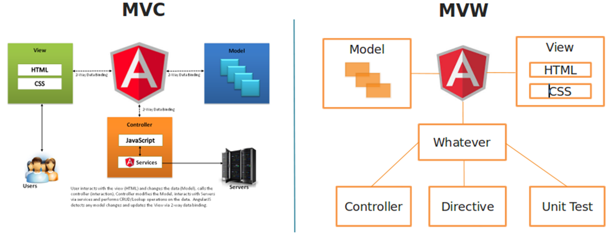

Что такое Angular?
Создавать веб-приложения становится проще, если для разработки вы используете фреймворк Angular. Вы столкнетесь с удивительным сочетанием декларативных шаблонов, интегрированных лучших практик, внедрения зависимостей и сквозного инструментария. Если вы знаете, как использовать расширенные возможности для разработки приложений на базе Angular, то это поможет вам преодолеть различные трудности в процессе работы. Узнайте больше о передовых практиках Angular из лучших учебников по данному фреймворку.
Преимущества Angular
Архитектура MVC
Вы можете использовать ее для разделения задач и отделения логики приложения от слоя UI. Все запросы поступают непосредственно к контроллеру, который затем работает в режиме подготовки данных, необходимых представлению. Затем представление использует эти данные, подготовленные контроллером, для отображения финального презентабельного ответа.
Расширенная архитектура дизайна
Большие веб-приложения состоят из множества компонентов. Управлять всеми этими компонентами непросто. Но использование фреймворка Angular упрощает весь процесс настолько, что даже начинающий программист, присоединившийся к проекту после начала разработки, без труда разберется в этом фреймворке. Сама архитектура фреймворка построена таким образом, что она позволяет разработчикам легко создавать или находить код.
Модулярность
AngularJS использует подход модульного программирования, согласно которому приложение состоит из нескольких модулей. Каждый модуль выполняет определенную роль и обеспечивает разделение задач.
Привязка данных
Возможно, вы уже слышали о привязке данных. Привязка данных означает, что ваши данные могут отображаться в различных представлениях, и изменения, сделанные в одном представлении, автоматически отражаются в другом представлении без написания дополнительного кода. AngularJS обеспечивает двустороннюю привязку данных, что означает, что и представление, и модель обновляются, когда происходит изменение в представлении или модели соответственно.
Сервисы и внедрение зависимостей (DI)
Сервисы — это функции JavaScript, которые отвечают за выполнение только определенных задач. Они представляют собой объекты-синглтоны (объекты-одиночки), которые создаются только один раз в приложении. Сервисы соединяются между собой с помощью механизма внедрения зависимостей (Dependency Injection. DI). DI — это шаблон разработки программного обеспечения, в котором описывается, как компоненты получают информацию о своих зависимостях. Angular имеет свой собственный фреймворк DI, который обычно используется при разработке приложений Angular для повышения их эффективности и модульности. Это облегчает разработку, тестирование и, в конечном итоге, сопровождение больших приложений AngularJS.
Директивы
Angular позволяет расширять HTML с помощью новых атрибутов, называемых директивами. Директива ng-app применяется для приложения Angular, директива ng-model привязывает значение элементов HTML (input, select, text) к данным приложения, а директива ng-bind привязывает данные приложения к представлению HTML.
TypeScript — это лучший инструментарий, чистый код и более высокая масштабируемость
TypeScript — это расширение JavaScript, которое добавляет в язык необязательную статическую типизацию. Код на TypeScript компилируется в JavaScript, который может быть прочитан любым браузером, что делает его идеальным выбором для создания приложений на стороне клиента.